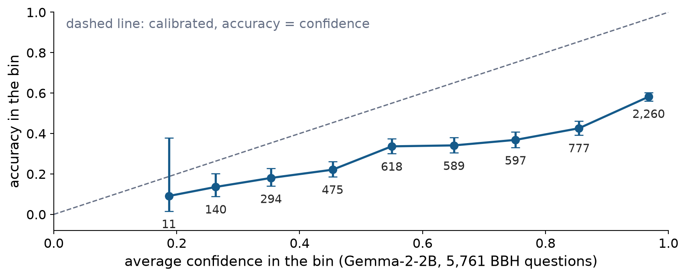

Week 6A: When the Model Says 0.9, Is It Right 90% of the Time?
Calibration, and when to let the model answer on its own
Shannon Gallagher
Recap: the numbers Lab 5 didn’t have
In Lab 5, the leaderboard asked how likely a model was to write each answer option, and the most likely option was its answer. We had only right or wrong. This week we have the probabilities.
Here is a real BIG-Bench Hard question and Google’s Gemma-2-2B, the smallest model from Lab 5:
If you follow these instructions, do you return to the starting point? Take 8 steps. Turn around. Take 8 steps.
Options: Yes, No
Gemma answers No with confidence 0.96. The right answer is Yes.
In Week 4 we called a model’s “confidence” a false friend: a probability for one item, not a statement about the model’s accuracy. This week asks whether it means what it says. When Gemma says 0.9 on many questions, is it right about 90% of the time? That question is called calibration.
Today: three questions
What does a confidence of 0.9 claim, and how do we check it? We compare the stated confidence with the accuracy over many questions, and put a Week 4 interval on each comparison.
How do we summarize calibration in one number, and what does that number hide? We compute the expected calibration error and return to Week 2’s Brier score.
When can a tool let the model answer on its own? We count how many questions a confidence rule lets the model answer and how many of those it gets wrong, with an interval.
Checkpoint 6 follows the same order, and so does the calibration question on the midterm.
Question 1: what does a confidence of 0.9 claim?
The team’s next decision
In Lab 5 and Homework 5, a team chose a language model for a tool that answers reasoning questions. Now it wants a version small enough to run on a phone, and it is looking at Gemma-2-2B. Its plan:
when the model is confident, the tool answers on its own;
when it is not, a person answers the question.
The model’s answer is its most likely option. Its confidence is that option’s probability, after the option probabilities are rescaled to add to 1. (The model also gives some probability to text that isn’t an option.) With K options, the confidence is at least 1/K.
The plan is safe only if a confidence of 0.9 means the answer is right about 90% of the time.
A confidence is a claim about many questions
One answer with confidence 0.9 cannot show anything: it is either right or wrong. The claim is about all the questions that get confidence 0.9. A model is calibrated if
P(\text{answer is right} \mid \text{confidence} = c) = c \qquad \text{for every } c.
Among questions answered with confidence 0.9, about 90% of the answers should be right. Among questions answered with confidence 0.6, about 60% should be.
This is the frequentist reading of probability: 0.9 is a long-run frequency over many similar answers. So we check it by counting outcomes on questions with known answers, without knowing how the model works.
A Bayesian reads 0.9 as a degree of belief about one question, which no single outcome can refute. Even so, Dawid (1982) showed that a coherent Bayesian expects their own forecasts to be calibrated in the long run, so a calibration check tests a Bayesian’s model too. Little (2006) calls this “calibrated Bayes.”
Gemma on all of BIG-Bench Hard
On the 5,761 BBH questions:
Average confidence
0.76
Share of answers that are right
0.43
Gemma talks like a model that is right about three times in four, and it is right fewer than half the time.
Discuss: before concluding that Gemma’s confidence is too high, what would you check?
Group the answers into bins
Group the questions by Gemma’s confidence. Each bin’s accuracy is k right out of n questions, so it gets a Week 4 Wilson interval.
Confidence
Questions
Average confidence
Accuracy
95% Wilson interval
0.1–0.2
11
0.19
0.09
[0.02, 0.38]
0.2–0.3
140
0.26
0.14
[0.09, 0.20]
0.3–0.4
294
0.35
0.18
[0.14, 0.23]
0.4–0.5
475
0.45
0.22
[0.19, 0.26]
0.5–0.6
618
0.55
0.34
[0.30, 0.38]
0.6–0.7
589
0.65
0.34
[0.30, 0.38]
0.7–0.8
597
0.75
0.37
[0.33, 0.41]
0.8–0.9
777
0.85
0.43
[0.39, 0.46]
0.9–1.0
2,260
0.97
0.58
[0.56, 0.60]
For each bin, ask: is the average confidence inside the interval? In the top bin, 0.97 is far outside [0.56, 0.60], so that gap is real. In the bottom bin, 0.19 is inside [0.02, 0.38]: with 11 questions, its gap could be chance.
The reliability diagram

Points below the diagonal are overconfident, and points above it are underconfident. When a bin’s interval crosses the diagonal, that bin’s gap could be chance. The numbers are the questions in each bin; always show them.
Check
On the team’s date questions, 150 answers have average confidence 0.90, and 120 of them are right. The 95% Wilson interval for accuracy is [0.73, 0.86].
Is the model overconfident on these questions? Could the gap be chance?
Accuracy is 120/150 = 0.80, which is 10 points below the stated 0.90. The interval does not contain 0.90, so the model is overconfident on date questions, and the gap is not chance.
A model can be close to calibrated over all questions and still be overconfident for one group, such as one kind of question.
Accuracy and calibration answer different questions
Accurate but overconfident. A model’s answers are right 90% of the time, but it says 0.99 on every one. The answers are good, and the confidence is not.
Calibrated but useless. On yes-or-no questions, a model is 50% sure of every answer and right on half of them. That is perfectly calibrated, and it has told the team nothing.
A useful model has to be calibrated, and it also has to separate easy questions from hard ones, saying 0.99 for some and 0.6 for others. Calibration is necessary, but it is not enough.
Morris DeGroot and Stephen Fienberg, both of CMU Statistics, made this distinction precise for weather forecasters in 1983.
Question 2: one number, and what it hides
Expected calibration error
The expected calibration error (ECE) averages the bins’ gaps, weighting each bin by its number of questions:
For Gemma, every bin’s accuracy is below its average confidence, so every term has the same sign. Then ECE is just average confidence minus accuracy:
\text{ECE} = 0.761 - 0.426 = 0.335.
On an average question, Gemma’s confidence is off by about 34 percentage points.
What ECE hides
ECE is one number for a whole diagram, so it leaves things out.
It depends on the bins. Ten bins and fifteen bins give different ECEs on the same questions. Report the bins you used.
It drops the direction. An ECE of 0.04 could come from overconfidence, underconfidence, or some of each.
Gaps in opposite directions can cancel in the overall averages. The shortcut on the last slide works only when every gap has the same sign. When the gaps have different signs, the overall averages can match while the bins are far off.
It averages over groups. A small ECE over all questions can hide one task where the model is 30 points overconfident.
So report the diagram, with its counts, next to the number.
Check
Another model answers 1,000 of the team’s questions:
The high bin, because it has the most questions, so its accuracy has the narrowest interval. Its Wilson interval, [0.87, 0.92], is well below 0.95.
The Brier score from Week 2
For one question, let Y = 1 if the answer is right and x be the stated confidence. The Brier score is (x - Y)^2. In Week 2 we showed that if the true probability is q,
The expected score is smallest at x = q, so the honest probability gets the best score. With q = 0.7:
Stated x
0.7 (honest)
0.9 (overconfident)
0.5 (hedging)
Expected Brier score
0.21
0.25
0.25
Accuracy does not reward honest probabilities: any x above 0.5 gives the same answer, so it gets the same accuracy. Models get better at whatever they are graded on.
Question 3: when can the model answer on its own?
A rule built on confidence
The rule: the tool answers on its own when the model’s confidence is at least t. A person answers every other question.
Two numbers describe the rule:
\text{share answered on its own} = \frac{\text{questions with confidence} \ge t}{\text{all questions}},
\text{error rate among those questions} = \frac{\text{wrong answers with confidence} \ge t}{\text{questions with confidence} \ge t}.
The error rate’s denominator is the questions the tool answered, not all questions. Raising t lowers both numbers: the tool answers fewer questions and gets fewer of them wrong.
Gemma’s rule at a threshold of 0.90
Gemma answers 2,260 of the 5,761 questions with confidence of at least 0.9.
The tool would answer 2{,}260 / 5{,}761 = 39\% of questions on its own.
Their average confidence is 0.97, so Gemma promises about 3% wrong answers.
The data show 945 / 2{,}260 = 41.8\% wrong, with 95% Wilson interval [39.8%, 43.9%].
The team will accept at most 10% wrong. What to tell them:
At a threshold of 0.90, the tool would answer about 39% of BBH questions on its own, and about 42% of those answers would be wrong (95% interval 40% to 44%). Gemma’s confidence promises about 3%, so it is badly overconfident here, and the tool would be far over your 10% limit. Even at 0.99, 30% of its answers are wrong.
Check
A better-calibrated model answers 200 of 1,000 questions with confidence of at least 0.97. Their average confidence is 0.98, and 4 answers are wrong. The 95% Wilson interval for the error rate is [0.8%, 5.0%].
Does the model’s confidence hold up on these questions?
Can the team promise at most 5% wrong answers at this threshold?
The model promises about 2% wrong answers, and it gets 4/200 = 2.0\% wrong. Here its confidence holds up.
Not quite. The interval reaches 5.0%, so the data are consistent with an error rate right at the limit. More questions with known answers above 0.97 could settle it.
What we did today
A confidence is a claim about many cases: among cases with confidence c, about a fraction c of the answers should be right. One case cannot check it.
Each bin’s accuracy is an estimated proportion. A reliability diagram with Wilson intervals and counts shows which gaps are real.
Accuracy and calibration are different. A calibrated model is useless if it never separates easy cases from hard ones.
ECE summarizes the diagram in percentage points, but it depends on the bins, drops the direction, and averages over groups. The Brier score rewards honest probabilities.
A rule that lets the model answer when confident is described by the share of cases it answers and the error rate among them. That error rate is an estimate, so compare its interval with the client’s limit.
Calibration belongs to a model and a population together.
Thursday, and reading
Thursday: the team has to pick a threshold. We will add the costs of a person’s time and of a wrong answer, see where the best threshold changes, and look at recalibration and at how language models state confidence. Then Lab 6 checks two larger models, Qwen and Llama: is either one’s confidence usable?
HW5 is due today. The midterm review packet is out today; Problem 2, parts 4 and 5, and Problem 3 practice today’s ideas on complaint routing.
Midterm: Thu Mar 4, in class, covering Weeks 1–6. Tuesday of Week 7 is review.
Reading: Guo et al. (2017), “On Calibration of Modern Neural Networks”, Section 1 and the reliability diagrams in Figure 1. As you read, ask whether their fix would still work on questions unlike the ones it was fitted on.
Optional: DeGroot and Fienberg (1983), “The Comparison and Evaluation of Forecasters,” The Statistician 32, 12–22, Sections 1–2.